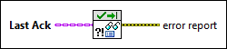

|
Last Ack specifies the Last Ack message that an actor sent. |
 |
error report returns the error the actor sent when it shut down. |
Owning Palette: Actor Framework VIs
Requires: Base Development System
(Filename: Actor Framework.lvlib:Last Ack.lvclass:Read Error Report.vi)
Returns the error, if any, that caused an actor to shut down.
